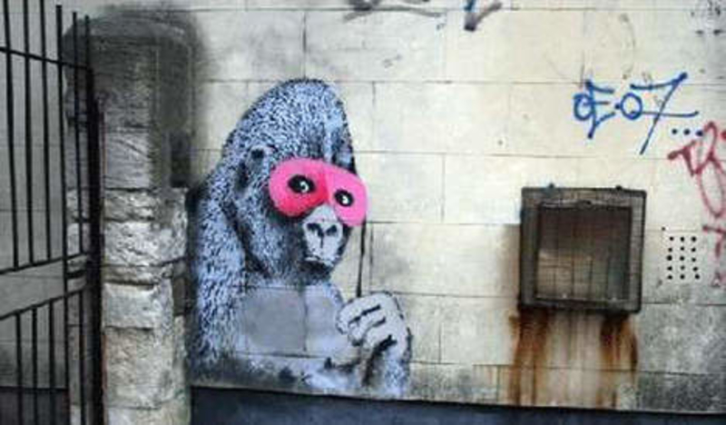

Credit
The Gorilla With Pink Mask in Banksy’s hometown of Bristol was in place for more than 10 years on the side of a former social club and was a big tourist attraction in town. However, in 2011 the new owner of the building painted over the piece not having heard of Banksy or realising that it was valuable.
2010-09
Spray Paint
Bristol, UK